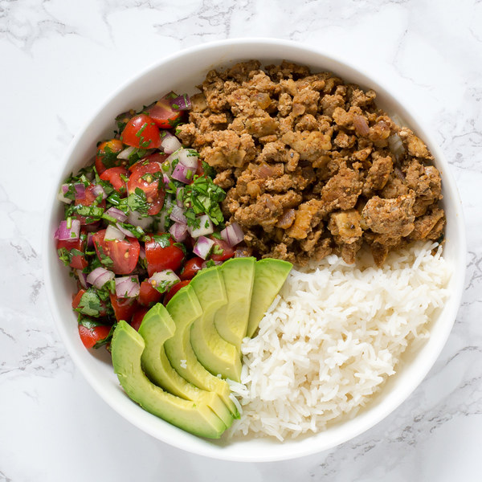

Turkey Pico Avocado Bowl

Easy, delicious, and healthy
- Avocado
- Ground Beef
- Cherry Tomatoes
- Lime
- Rice
- Cilantro
- Onion
- Garlic
- Chili Powder
- Cumin
- Onion Powder
- Garlic Salt
- Cook ground beef, 1/2 diced onion, and garlic in a Dutch oven over medium heat until well browned. Stir in crushed spices.
- Bring a large pot of lightly salted water to a boil. Cook Rice.
- Quarter Cherry Tomatoes, Halve Avocado, Dice Cilantro, Halve Lime. Combine, including remaining 1/2 onion